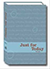
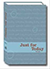

Enter your email address and click on the "Subscribe" button in the form below. Check your mailbox for the confirmation email. If you do not see the email in your inbox please check your spam/junk folder for the message. Once you click on the link inside that email, you will be taken to the final confirmation page. Many email programs mark our messages as spam, please add jft@na.org as a contact in your email.
Enter your email address and click on the "Unsubscribe" button in the form below. On the next page you will be asked to confirm that you wish to be removed from the mailing list. Once you click yes on that page, you will be sent a final confirmation via email.
Spanish JFT- is a service done by the Latin American Zonal Forum and can be signed up for here.
German JFT - is a service done by the German Speaking Region of NA and can be signed up for here.
Looking for another time for the JFT to be sent in English? New Zealand Region also has an English email service that sends emails in several different time zones and can be signed up for here.
If you experience any problems while trying to subscribe, please contact the List Manager at jft@na.org.